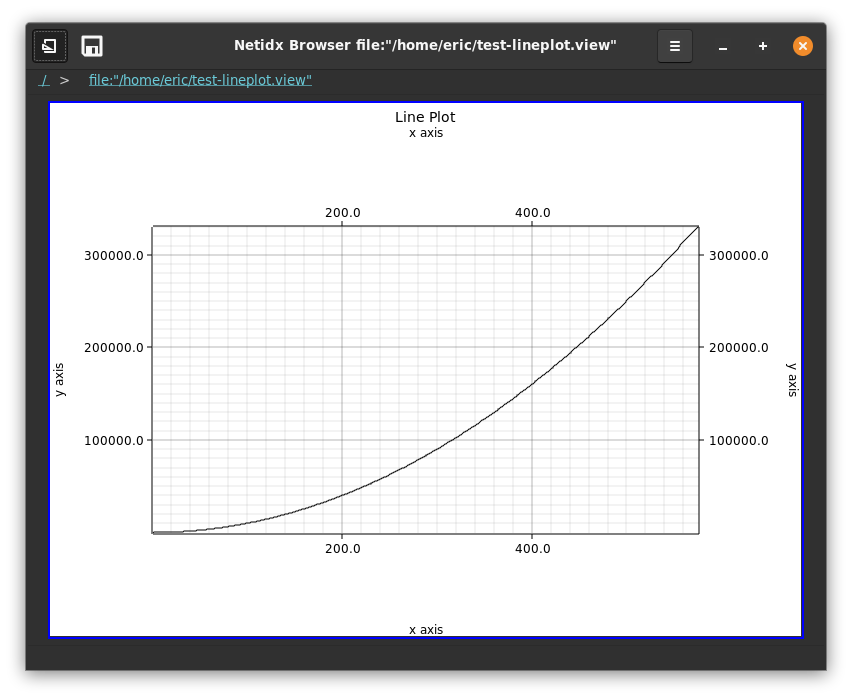

Line Plot

The lineplot widget draws animated line plots with multiple series on a plot and numerous configuration options.
Chart Style
- Title: The title of the plot, shown on the top center.
- Fill: The background fill color, if any. If the box is unchecked then there will be no fill color
- Margin: The size of the chart margins
- Label Area: The size of the are reserved for the axis labels
Axis Style
- X Axis Label: The label of the X axis
- Y Axis Label: The label of the Y axis
- X Labels: The maximum number of points on the X axis that get labeled
- Y Labels: The maximum number of points on the Y axis that get labeled
- X Axis Grid: Draw grid lines along the X axis
- Y Axis Grid: Draw grid lines along the Y axis
Axis Range
- x min: The minimum value on the X axis. If
nullthis will be computed from the data set. - x max: The maximum value on the X axis. If
nullthis will be computed from the data set. - y min: the minimum value on the Y axis. If
nullthis will be computed from the data set. - y max: the maximum value on the Y axis. If
nullthis will be computed from the data set. - keep points: The number of points of history to keep.
Series
There can be multiple series on a line plot, use the + and - buttons to add/remove series from a plot.
- Title: The title of the series
- Line Color: The color of the line associated with the series
- X: The expression that generates the X coordinate of the series
- Y: The expression that generates the Y coordinate of the series
Example
X: { let tick <- count(timer(f64:0.5, 1024)); tick }
Y: product(tick, tick)
This will animate the plot of y = x ^ 2 2 points per second out to
x = 1024.